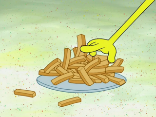

Kelp Fries 🍟
What's a burger without fries? Crispy on the outside, fluffy on the inside!
Crazy, good deliciousness :)
Ingredients
- 6 Medium Russet Potatoes
- Oil Of Your Choice
- Water
- Salt
- Vinegar - 15mL per 1 liter of water (1 tbsp to 4 cups water)
Steps
- Set a pot of water over high heat and bring to a boil.
- Peel and cut the potatoes into 1/4 inch thick strips.
- Add 2 large pinches of salt, vinegar, and potatoes to the boiling water.
Boil until the potatoes are fully tender but not falling apart, about 10 minutes.
Set a paper-towel-lined baking sheet on the right.
- Drain and spread the potatoes on the paper-towel-lined baking sheet.
Allow to dry for at least 5 minutes.
- Add the oil to a large wok and bring to 400 degrees Fahrenheit.
Meanwhile, set up the fry station by placing the boiled fries on the left and another paper towel-lined
baking sheet to the right of the wok.
- Separate the fries into three small batches.
Using a spider or slotted spoon, gently lower the fries into the hot oil.
Fry each batch for 50 seconds (set a timer) and let drain on the separate paper towel-lined baking sheet.
Repeat the process for the remaining two batches and let the fries cool for 30 minutes or in the freezer before the second fry.
- Return the oil to 400 degrees Fahrenheit over high heat.
Meanwhile set up the fry station by placing the potatoes on the left, and a metal bowl with a paper towel on the right.
- Gently lower half of the fries into the hot oil.
Fry until they are crisp, lightly golden brown and floating, about 3 to 4 minutes.
Drain the fries, move to the paper towel-lined bowl and immediately season with salt.
The cooked fries can be kept hot and crisp on a wire rack set on a baking sheet in a 200°F oven while you cook the second batch.
Enjoy.
